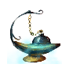
Эфирная лампа
Предметы / С заданий
Открыть в интерактивной вики →
| Вес | 40 |
|---|---|
| Цена | 6 000 |
Описание
Очень ценная и разыскиваемая лампа. Можно попытаться продать ее
Верштейн 300к опыта персонажу
Лукас Ландау 3800 опыта активным дрифам (+840 если заплатить 30x
Хумбольд 100к опыта питомцу
Кузнец Судьбы
Неудачные:
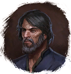
Верштейн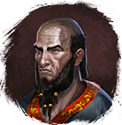
Лукас Ландау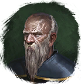
Хумбольд или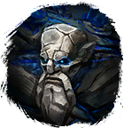
Кузнец Судьбы. Каждый предложит за нее иную цену.Верштейн 300к опыта персонажу
Лукас Ландау 3800 опыта активным дрифам (+840 если заплатить 30x
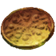
Ворлинский Дукат)Хумбольд 100к опыта питомцу
Кузнец Судьбы
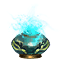
Эфирный катализаторНеудачные:
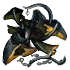
Остатки эфирной лампы и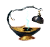
Неудачная эфирная лампа| Очень ценная и востребованная лампа. Её можно попробовать продать Верштейну, Ландау или Гумбольдту — каждый предложит свою цену. |
Рецепт
Создание: 1x
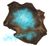
Эфирный порошок + 1x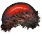
Брюшко Клеща + 1x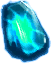
Ледяное ядро мощи + 15kГде создать
Применение
|
Способы получения
 |